点底部看每天怎么走。图都标了年份。每天只选一套，不拼。
9:30 杭州上城出发
一家三口（6 岁）。周五直奔千岛湖镇吃饭，再坐中心湖区下午船，晚上才去郝力克。别先去酒店，酒店在界首华美胜地，离码头大约 45 分钟。
东南湖区这趟赶不上。中心 / 东南船票不通用，当天只选一条船线。
这不是酒店所在的湖湾
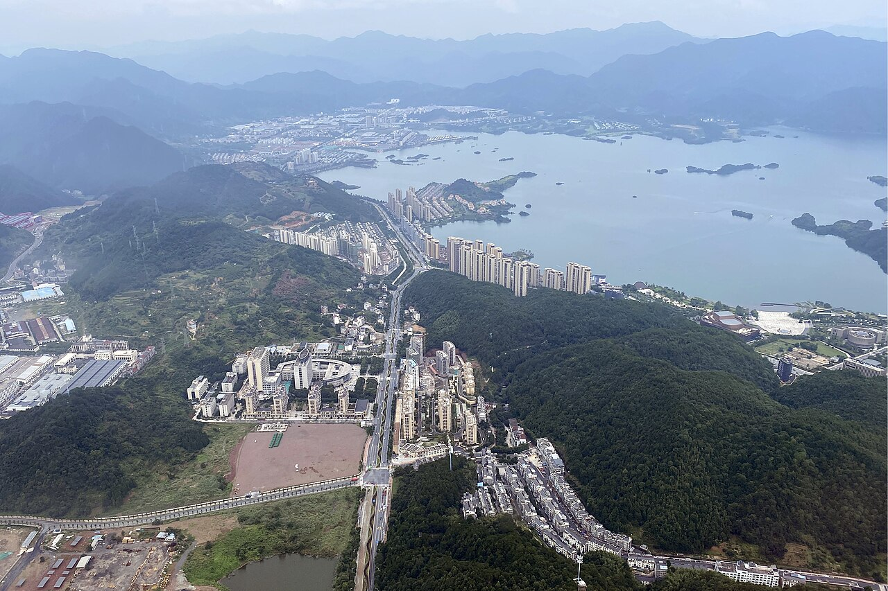
2020-07 · 航拍淳安县城（千岛湖镇）。酒店在湖另一侧界首，开车 40–50 分钟。别把这张当成华美胜地。
三天怎么排
周五 A镇上淳圆外 → 中心码头 → 梅峰缆车 + 月光 / 龙山 → 入住郝力克
周五 B淳圆外 → 环湖免费观景（可加天屿）→ 郝力克
周六 A不离开华美胜地：蹦床、萌宠、水上，傍晚可选落日游船
周日 A上午小项目 → 中午酒店鱼头 → 14:00 返上城
酒店导航搜「千岛湖郝力克酒店」，电话 0571-65098888。入住 14:00 后，退房 12:00 前。酒店免费停车。
车和船怎么配合
车不上船。中心湖区是环线公交船：从中心湖区旅游码头上船，岛上换同一条船线，最后仍回到同一个码头下船取车。不是开到岛上，也不是从东南码头回来。
出发前必做
- 提前 1–2 天微信「千岛湖旅游」或小程序「玩转千岛湖」约中心湖区 12:00–14:00班，孩子也要实名。
- 周五大门票免费，船票仍要买。预约时看停岛有没有梅峰 + 月光。最晚班可能只剩龙山 + 月光。
- 带晕船药、防晒帽、驱蚊、换洗衣物、零食水。
- 点菜口令：砂锅浓汤 / 奶白汤，不辣、少盐、清淡。鱼头 3–4 斤，问清是否现杀。
当天只选一套
| A 本趟 | B 自驾 | C 备选 | |
|---|---|---|---|
| 核心 | 梅峰下午班 | 环湖免费观景（可加天屿） | 乐园蹦床 |
| 出门 | 9:30 直奔镇上 | 9:30 | 9:30 直达酒店 |
| 坐船 | 中心 3–4 小时 | 不上 5A 大船 | 可不上大船 |
| 不选如果 | 12:30 还没进镇 | 今天必须登岛 / 会晕车 | 今天必须看千岛 |
东南早班须 7:00 出门，这趟赶不上，中心 / 东南船票不通用，跑错码头当天就废。
镇上吃饭 + 中心下午船
适合：9:30 出发、先吃饭、还想当天看见千岛。
自驾路线
- 杭州上城 → 秋石高架 / 绕城 → 杭新景高速（杭千高速） → 千岛湖。约 150 公里、2–2.5 小时。周五 9:30 出城通常比早高峰好。
- 第一段导航：「淳圆外」或「梦姑路 8-28」。不要搜郝力克，也不要搜东南湖区码头。
- 吃完再导航：「千岛湖中心湖区旅游码头」或「千岛湖中心湖区旅游码头-停车场」。地址在梦姑路 348 号。
- 下船取车后，第三段导航：「千岛湖郝力克酒店」（界首乡锦秀路 89 号），约 45 分钟。
停车：车停码头，不上岛
- 上船和下船是同一个码头：中心湖区旅游码头。船在梅峰 / 月光 / 龙山之间跑环线，最后开回原码头。别把车停在餐厅门口坐船。
- 淳圆外在夜游码头附近（约 300 米），夜游船不是中心湖区下午班。吃完要开车去 348 号中心码头停车场。
- 停车场导航搜「千岛湖中心湖区旅游码头-停车场」。车位常见约 800 个。行李可以留车里，码头游客中心旁也有行李寄存柜。
- 收费以闸机公示为准。2025-10-01 淳安县下调：中心 / 东南码头停车场最高约 5 元/小时，非节假日封顶 20、节假日 30，进场 1 小时内免费。网上仍能看到旧价 6 元/小时、40 封顶，别按旧攻略算。
- 郝力克酒店免费停车。周六 A 车可以一整天不动。
停好车怎么走到上船点
导航停「千岛湖中心湖区旅游码头-停车场」（梦姑路 348）。下车走高德这条步行线：先到游客中心买票或换票，再去旅游码头检票上船。高德实测 241 米、约 4 分钟。
- 票：提前 1–2 天微信「千岛湖旅游」或小程序「玩转千岛湖」约中心湖区 12:00–14:00 班，孩子也要实名。周五大门票免，船票仍要买。
- 现场：游客中心 / 售票大厅窗口。换到纸质票后，15 分钟内去检票口，逾期可能影响登船。
- 车停 1 号停车场等回来。车不上船，也不去东南码头。
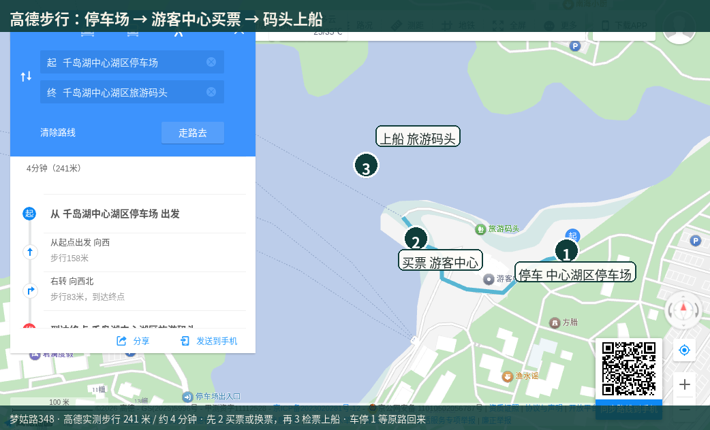
高德步行 · 1 停车 → 2 游客中心买票/换票 → 3 旅游码头上船 · 241 米 / 约 4 分钟
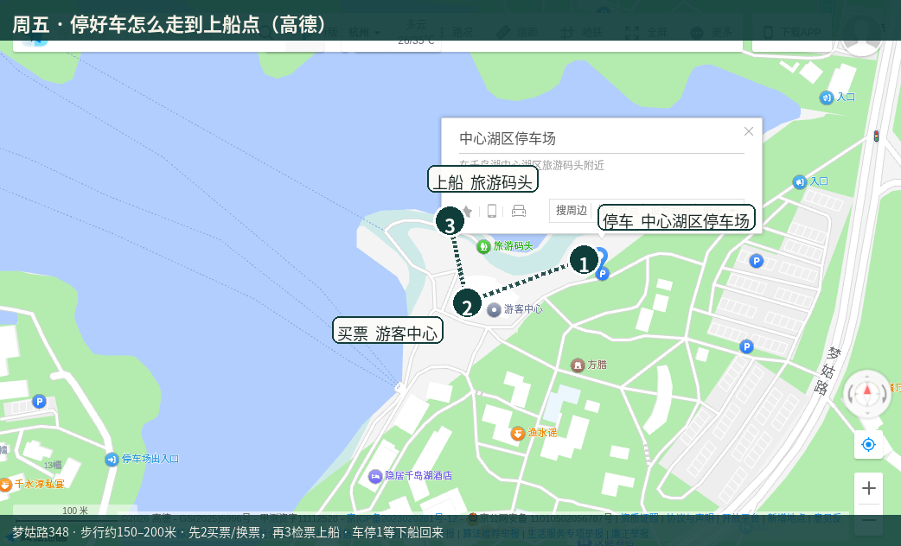
高德 · 停车场、游客中心、旅游码头相对位置
这一班怎么走：下船逛，再上同一条船
买的是一班船的一张船票，不是每岛一张。船像公交：到岛停，你们下船参观，到点回这个岛的原码头，上刚才那条船去下一岛。岛和岛之间只能坐船，走不过去，也不用再买票。
2+3 和 4+3 是两班不同的下午船，当天只坐一班。2+3＝梅峰+月光，大约 4 小时。4+3＝龙山+月光，大约 3 小时。四岛全走是上午早班，大约 6–7 小时，这趟下午来不及。
- 1车停中心码头停车场。中心码头上船。
- 2船开到第一岛，下船玩 40–60 分钟（梅峰先坐缆车）。
- 3回这个岛的原码头，上同一条船，开下一岛，再下船玩。
- 4最后一岛玩完上船，船开回中心码头下船取车。中间不用换船，也不经过东南码头。
周五买什么票
官网/官方渠道是微信「千岛湖旅游」或小程序「玩转千岛湖」，选中心湖区那天的班次。电话 0571-64816244。4–10 月周五（法定节假日除外）大门票免，只要买船票。孩子也要实名。
- 常见公布价：大门票旺季 130 元（这天免）；中心湖区船票成人大约 65 元，1.2–1.5 米儿童大约 35 元，1.2 米以下常见免船票。第三方套票 110–195 元是门票+船票打包，周五别重复买门票。
- 梅峰缆车另付，成人往返 60 元，儿童往返 30 元，窗口为准。
- 预约时看这一班停岛：有「梅峰+月光」就选它（2+3）。只剩「龙山+月光」就是 4+3。当天价格和停岛以小程序为准。
发船时间（本趟看下午）
中心湖区是滚动发班，坐满就开，不满常整点开。窗口和小程序会微调，出发前一天以「玩转千岛湖」当天班次为准。咨询电话 0571-64816244。
| 常见窗口 | 停岛 | 大约多久 | 本趟怎么用 |
|---|---|---|---|
| 12:00–12:50 | 梅峰 + 月光 | 约 4 小时 | 要梅峰就约这一档。吃饭要快，建议 12:40 前到码头换票。 |
| 13:00 前后 | 有的年份写成 13:00 梅峰+月光 | 约 4 小时 | 预约时看停岛有没有梅峰，有就优先。 |
| 13:00–14:20 | 龙山 + 月光 | 约 3 小时 | 吃到 13:00 再走，多半只剩这档，没有梅峰。 |
| 约 14:00 | 末班，常见龙山+月光 | 约 2.5–3 小时 | 别卡点。满员就不卖。最晚 13:30 到码头。 |
上午班 8:00–10:00 更密，这趟用不上。夜游码头那班不是 5A 下午船。东南码头船票不通用。
上船、下船注意
- 换票后 15 分钟内检票，逾时不候。别在窗口聊太久。
- 孩子也要实名预约。周五大门票免，船票仍要买。优惠票检票出示证件。
- 安检不带刀具、打火机。大件行李可放车里或游客中心寄存柜。
- 上船先问船员：今天停哪几岛、每岛停多久、几点回船。记下船号，手机定闹钟，提前 10 分钟回码头。
- 每岛只有一个游船码头。下船玩，必须回这个岛的原码头上同一条船。不要走到别的趸船。
- 错过本班：等下一班或自己租艇，贵而且不一定有。中途一般不能换船。
- 岛上停留常见 40–60 分钟。梅峰先买往返缆车，别逛商店。龙山走一圈就回。月光只走鱼乐桥。
- 一层普通舱、二层观景舱先到先得。湖面风大，拉好 6 岁，备晕船药和薄外套。
- 全线结束仍回中心湖区旅游码头下船取车。不是夜游码头，也不是东南码头，更不会开到郝力克。
时间轴
- 109:30 杭州上城出发。
- 212:00 进千岛湖镇。堵到 12:30 还没进镇，改走 C。
- 312:10–13:00 淳圆外吃鱼头（夜游码头附近）。点砂锅浓汤鱼头。有儿童椅，提前订临湖位。
- 4要梅峰：约「梅峰+月光」，吃饭压缩，12:40 前到码头换票。吃到 13:00 再走：按龙山+月光准备，13:30 前上船。
- 513:20–17:00 环线登岛，约 3–4 小时。常见梅峰 + 月光 / 龙山。
- 617:00 回到中心码头下船取车，开约 45 分钟入住郝力克。酒店免费停车。
游览路径：中心湖区下午班
船班不同，停岛组合不同。上船先问船员今天停哪几岛、每岛停多久。原则：时间留给梅峰缆车，祠堂走马观花。
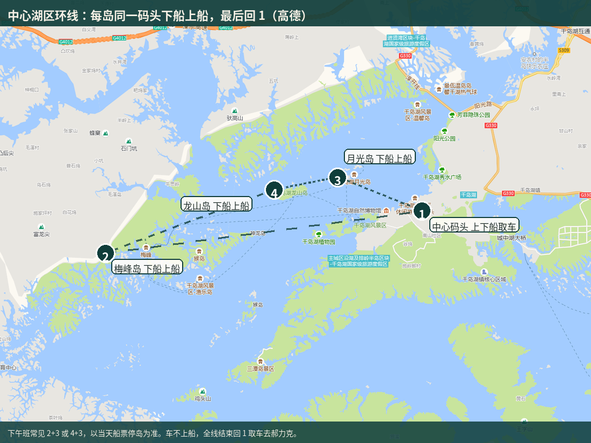
高德 · 1 中心码头取车 / 2 梅峰 / 3 月光 / 4 龙山。每岛同一码头下船上船，最后回 1。下午班常见 2+3 或 4+3。
1. 梅峰岛 · 必做
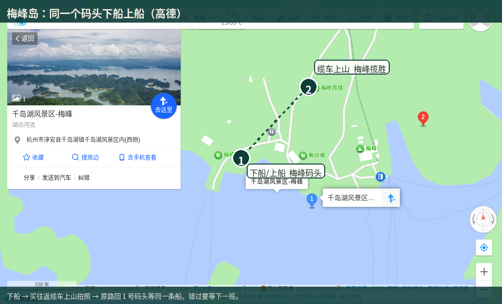
高德 · 梅峰码头下船上船，买往返缆车去揽胜，原路回同一码头等船
- 下船上岛 → 不要爬山 → 买往返缆车（成人往返 60 元，儿童往返 30 元，窗口为准）→ 坐约 5 分钟到山顶。
- 山顶观景台 360° 看群岛。老话说「不上梅峰观群岛，不识千岛真面目」。拍完就下山，别在亭子耗太久。
- 6 岁坐好别探身。湖面反光强，戴帽防晒。2026 年 6–8 月三特仍在发梅峰缆车，今夏能坐。
- 每岛停留常见 40–60 分钟，下午班可能更紧，下船上缆车别逛商店。
梅峰索道·千岛湖梅峰揽胜
- 索道不含在门票和船票里。下船后到梅峰码头北约 40 米的索道下站窗口，现场买往返。镇上游客中心买不到索道票。一般不用小程序提前买。
- 2026 攻略价以窗口为准。成人往返 60 元，单上 35 元，单下 30 元。儿童往返 30 元，单上 20 元，单下 15 元。旧价 40 元、20 元已过时。这家买往返。
- 下站在梅峰码头北面。上站在梅峰揽胜、观景台旁约 30 米。一程大约 3 到 5 分钟。下船后到下站上车，上站下车，拍完原路回下站，再回同一码头等原船。下午班别走路上山，路上要 15 到 25 分钟。别滑草下山。
- 门票 1.2 米（含）以下或 6 岁（含）以下免。周五门票本来就免。船票常见 1.2 米以下免，1.2 到 1.5 米大约 35 元，孩子也要预约。索道官方没有写死「1.2 米以下免索道」，窗口量身高。没免就买儿童往返。带户口本。门票免不等于索道免。咨询 0571-64816244。
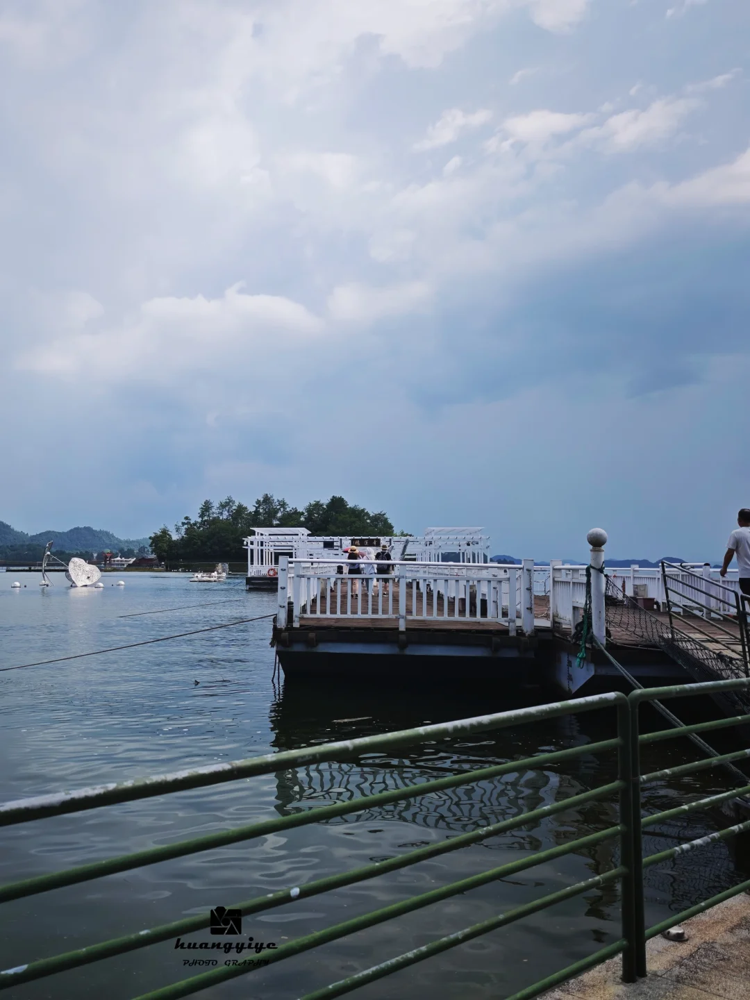
2026-07-31 · 小孩坐在梅峰缆车里，窗外是中心湖区群岛
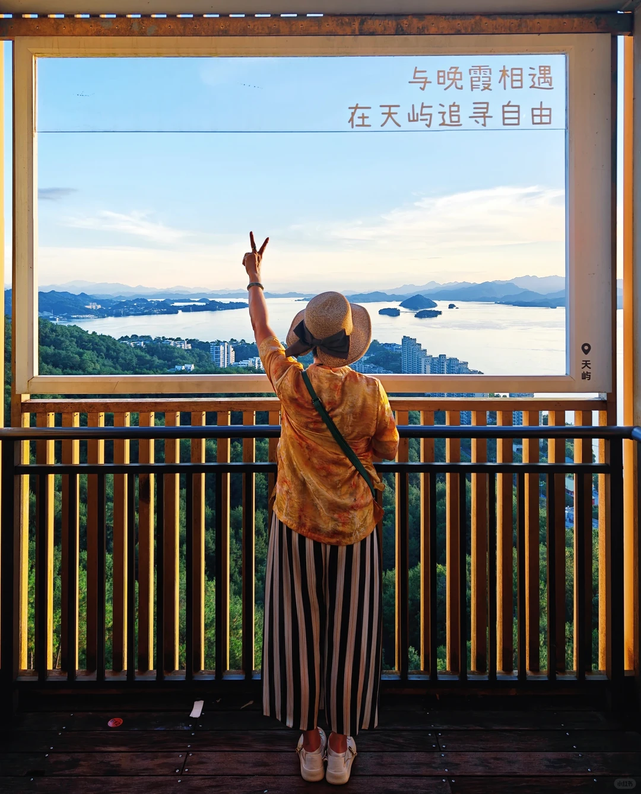
2026-07-16 · 山顶俯瞰，360° 群岛，不是黄山尖「公」字角度
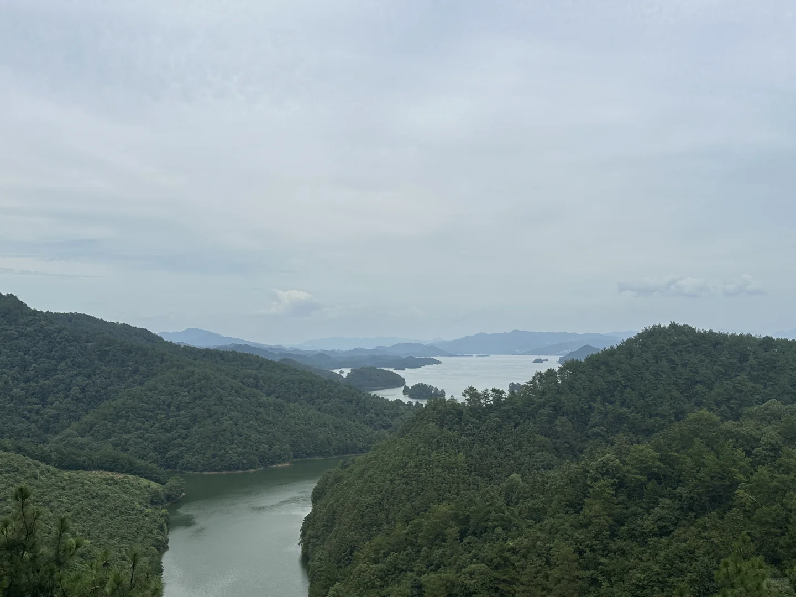
2026-07-25 · 票面「梅峰索道·千岛湖梅峰揽胜」
2. 月光岛 · 有就看鱼乐桥
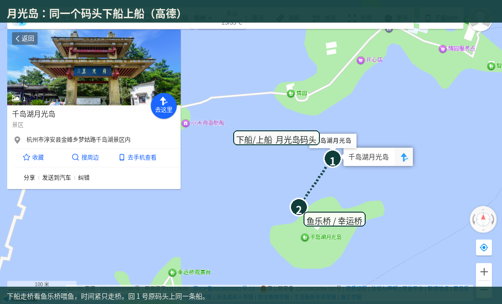
高德 · 月光岛原码头下船上船，走鱼乐桥/幸运桥，回同一码头
- 偏爱情步道、状元桥。2026 年夏一手笔记：喂鱼在月光岛鱼乐桥，不在渔乐岛。
- 6 岁可以看桥上喂鱼。不自带投喂。时间紧就只走鱼乐桥，别逛锁文化展。
3. 龙山岛 · 走马观花
- 海瑞祠、书院，偏人文。6 岁容易腻。跟队伍走一圈就回船，别进祠堂细看。
4. 渔乐岛 · 只吃饭
- 近几个月笔记写得很一致：渔乐岛是吃饭补给点，「十分钟逛完」。不是喂鱼点。无合格喂鱼近照，不配图。
- 中午已经在淳圆外吃过，岛上不必再正餐。下船后也别在码头路边摊吃。
船上：一层普通舱、二层观景舱，二层先到先得。甲板拉好孩子。备晕船药。
淳圆外 + 环湖看风景
适合：9:30 出发，下午不去岛，想自驾看湖。
时间轴
- 109:30 上城出发。
- 212:00–13:10 淳圆外吃完鱼头，这天不赶船。
- 3可选：先南下上江埠驿站/观景台 30–40 分钟，免费，不要停桥面，然后折回镇上。上江埠在淳杨线南岸，不顺路界首郝力克。
- 4可选付费：天屿山电梯俯瞰。门票约 50，扶梯约 25–30，1.2 米以下门票常免。想看日落就留到 17:30–18:40。不想买票可跳过。
- 5顺路千汾线去郝力克：千岛湖大桥路过，桥上不能停 → 红叶湾停 10–15 分钟，8 月没红叶，只看湖湾 → 小金山观景台/驿站 20–30 分钟，路边停车，步行很短。
- 6去郝力克入住。
一天只选 A 或 B。船后再上天屿带 6 岁太拼，不当默认。这不是 150 公里整圈，只走镇上到界首这一段。
免费点优先上江埠、小金山。天屿是付费俯瞰，想看日落再买票。黄山尖必须坐东南船，周五不加。
周五已经坐船，优先不离开度假区
| A 推荐 | B | C | |
|---|---|---|---|
| 核心 | 乐园+水上+萌宠 | 湿地+古村 | 环湖+日落 |
| 开车 | 基本不开 | 中等 | 最多、弯道多 |
| 孩子 | 最高 | 看不是玩 | 靠停车点 |
| 不选如果 | 已经玩腻园区 | 只想蹦床 | 会晕车 |
华美胜地全天嗨玩
现用名 WILD WORLD 7 号探索乐园，路牌可能仍写格林 7 号。酒店步行可达。先问前台当天适合 6 岁的项目再买票，不要按旧攻略买陆地通票。
车停酒店不用动。周六 A 全程步行。傍晚落日游船在园区码头上下船，回来还是酒店，不用开回镇上中心码头。
游览路径（不用开车）
- 108:30 酒店早餐。问前台：蹦床、萌宠、青山营、身高门槛、落日游船几点。
- 209:30–12:00 乐园开门后先蹦床 / 网道 / 木质攀爬，再萌宠。青山营听鸟、昆虫旅馆适合歇脚。飞拉达、UTV、高空秋千、卡丁车先量身高，常见 1.2 米。
- 312:00 回酒店或园区吃不辣鱼头，午休。
- 414:00–17:00 换 UPUP 水上：桨板、水上自行车、碰碰船。必须穿救生衣，家长贴边。备两套换洗衣物。绿道可骑一圈亚运主题段。
- 517:30 可选「千岛迷宫」落日游船，约 90 分钟，走界首列岛，不是 5A 中心 / 东南门票船。
- 619:00 酒店鱼头汤，回别墅。累了随时能回，不必排满。
乐园常见 09:30–17:30。1.2 米以下入园常见免费，项目另计，以现场为准。
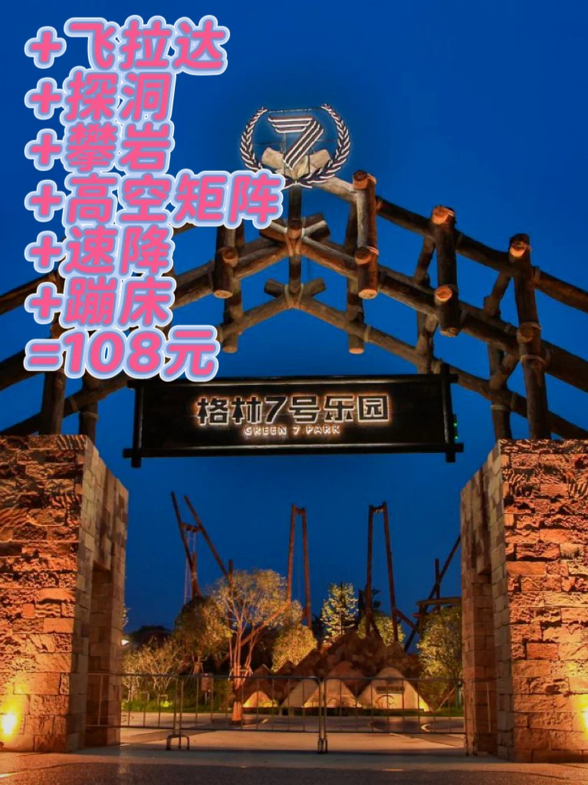
2026-06-21 · 门头仍写格林 7 号探险乐园
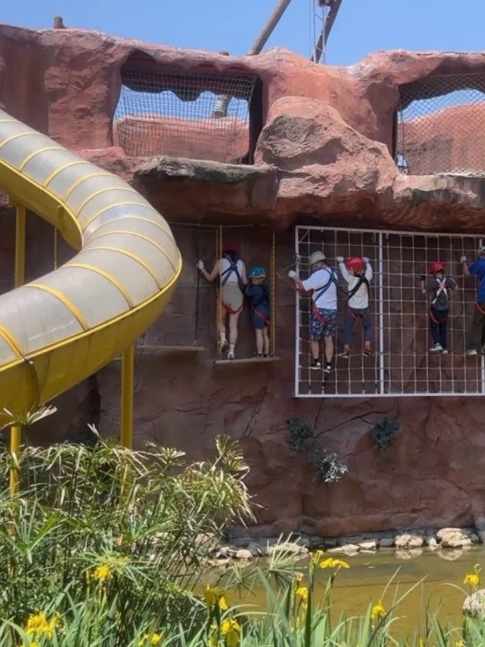
2026-06-21 · 林间蹦床、网道，6 岁优先这个
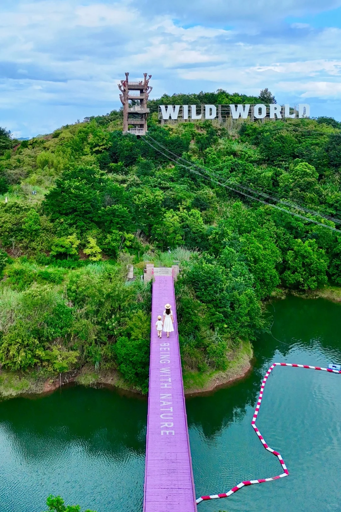
2026-08-21 · 航拍白色大字 WILD WORLD，山谷探险塔和吊桥
12:00 前退房，15:00 前上路
返杭仍约 2–2.5 小时。周日再坐大船很容易和返程打架。
| A 推荐 | B | C | |
|---|---|---|---|
| 安排 | 酒店收尾+鱼头 | 补漏再走 | 庭院躺平 |
| 赶路 | 低 | 高 | 最低 |
| 新景点 | 无 | 下姜村或短线湖 | 无 |
酒店周边悠闲
- 108:30 早餐后萌宠或乐园剩余小项目。只玩一会儿。
- 211:00 退房。先问延迟或寄存，行李整理好再玩上午。
- 312:00 酒店清淡鱼头午餐，不用再开车找店。
- 414:00 从酒店停车场出发，原路杭千高速回杭州上城。车上备水零食，孩子可能补觉。
统一点菜
「砂锅浓汤 / 奶白汤，不辣、少盐、清淡」。鱼头选 3–4 斤，问清是否现杀。避开码头路边摊。
1. 淳圆外·寻味古村落 · 周五中午首选
梦姑路 8-28，近夜游码头 / 中心码头。人均 80–100。临湖落地窗、徽派、现捞有机鳙鱼、明厨、儿童椅。点砂锅浓汤鱼头、鸡汤鱼滑豆腐。提前订临湖位。
2. 郝力克酒店餐厅 · 其余顿最省事
吟游 Club / 喜鹊树。周五晚、周六、周日不用开车。本地鱼头汤 + 农家菜，点不辣版。
3. 千岛湖鱼味馆（总店）
新安大街 / 渔人码头。人均 120–200。1980 年老字号，一鱼三吃。全部要求不辣。
4. 渔你有约
南景路 / 鱼街。人均 80–120。淳牌有机鱼，可按小孩减盐。
5. 好东家 / 姜君府
阳光路 / 渔街。家常土菜。姜君府点奶白鱼头，避开剁椒辣版。
6. 临岐鱼馆·羡山饭店
临岐 / 羡山半岛。只有顺路才去。
备忘
- 环湖路限速 40–60，弯多会车，勿路边乱停。酒店免费停车。
- 落日游船是华美胜地园区项目，不是 5A 湖区门票船。
- 黄山尖、桂花岛是东南线，本趟周五不走。已有 2026-08 黄山尖近照，但不拿来选周五 A。